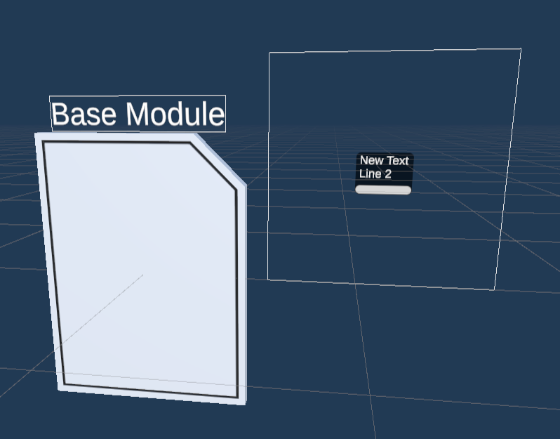
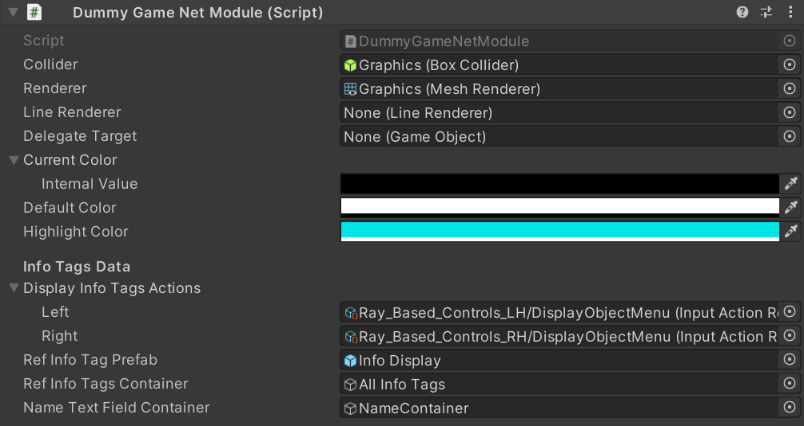

About Modules
Modules are be 3D interactable objects in ECellDive which encapsulate data or actions. They are the main mode of interaction for users to have an effect on the virtual environment of ECellEngine. Hence, general requirements about modules is to be able to receive input from user, to be moved around, to encapsulate data, or to encapsulate functions that the user can trigger.
Our approach is to use inheritance to define specific modules. Currently, there are two base classes that can be inherited that already implements the basics about interaction. The first one is Module and the seconf is GameNetModule.
Module or GameNetModule? That is the question.
The primary difference between the two is the Module is local while GameNetModule is synchronized over the multiplayer network. Hence, when making a new module, the first question to answer is whether every user in a session should see the module. For instance, when making a module to encapsulate data in which users can dive, it is likely that this must be shared on the network for every user to access the data and collaborate on it (so inherit from GameNetModule). However, if the purpose is to implement a module to modify the environment or the data, there might not be any reason to make an instance of the module accessible to every user(so inherit from Module). This is ultimately a design decision.
Modules that inherit from GameNetModule:
Those represent data. And every module that inherit from Module are:
- GroupByModule
- HttpServerFbaModule
- HttpServerImporterModule
- HttpServerInfoQueryModule
- HttpServerModificationModule
GameNetModule's children must override 3 methods
Currently, GameNetModule inherits from the interface IDive as well as IMlprData which have methods that MUST be implemented by children.
For IDive it is GenerativeDiveInC. This coroutine is where the user must define what to generate in the new dive scene. This is specific to every "diveable" module so, of course, it must be defined.
For IMlprData, there are two methods, AssembleFragmentedData and RequestSourceDataGenerationServerRpc. The former's role is to reassemble network-synchronized data that has been imported by one the user in the multiplayer session and that was broadcasted (as fragments) to all other clients of the session. The later's role is to request the server to generate the representation of the data stored in the module. It will likely be called inside GenerativeDiveInC.
To enforce the implementation of GenerativeDiveInC andAssembleFragmentedData, the GameNetModule was marked as abstract and so were the two previous functions. However, it is not possible to do so for RequestSourceDataGenerationServerRpc as RPCs they cannot be abstract. So developers must be vigilant to not forget it.
Examples (available in the assets)
The Unity project contains an example of basic setup for gameobjects using the Module and GameNetModule components. Those are respectively called BaseModule and BaseGameNetModule. You can find them under Assets\Resources\Prefabs\Modules.
Both gameobjects have exactly the same structure:


Module Graphicshave the collider and renderer attached.Module Name Canvasis a container for the name of the module.All Info Tagsis a container for all the info tags that might be attached to the module. Despite the name, it is also used in other modules to contain any UI menu that can be associated to a module.Info Displayis a prefab that can be instantiated to create information labels associated to the module and which will haveAll Info Tagsas parent. This info display is just used for a reference; it is never used. It will be deactivated on module spawn to become invisible and it is never reactivated.
The are assigned similar textures and 3D models:


What really matters are their respective components.
The Module component shows in the Inspector as:

The GameNetModule component shows in the Inspector as:

The GameNetModule component is marked as abstract so it cannot directly be a component. That is why, we created DummyGameNetModule just for the purpose of demonstration of the component. It is in fact empty.
General workflow to create a new module
- We recommend to start by duplicating the
BaseModuleor theBaseGameNetModuleto have a working basis. - Create a new script following the naming convention
XXXModulesomewhere underAssets\Scripts\Modules. You may create a new folder if you think it's relevant.- If you are making a new locale module, then have your class inherit from Module.
namespace ECellDive.Modules { /// <summary> /// DOC /// </summary> public class XXXModule : Module //add interfaces if needed { //The field of your class //The fields/properties of the interfaces (if any) //Unity's overriden methods (Start, Update, OnXXX,...) //The methods of you class in alphabetical order //The methods of the interfaces (if any) } }- If you are making a new multiplayer module, then have your class inherit from GameNetModule and implement the three mandatory methods.
namespace ECellDive.Modules { /// <summary> /// DOC /// </summary> public class XXXModule : GameNetModule //add interfaces if needed { //The field of your class //The fields/properties of the interfaces (if any) //Unity's overriden methods (Start, Update, OnXXX,...) //The methods of you class in alphabetical order //The methods of the interfaces with, at least, the following: #region - GameNetModule IDive Method - /// <inheritdoc/> public override IEnumerator GenerativeDiveInC() { //write how to generate the new dive scene and how you //want to "wait" (since this is a coroutine). //You might want to call RequestSourceDataGenerationServerRpc here. } #endregion #region - GameNetModule IMlprData Methods - /// <inheritdoc/> public override void AssembleFragmentedData() { //write how to assemble the fragmented data. //Assembling might be "easy" using ECellDive.Utility.ArrayManipulation.Assemble. //But you probably want to retrieve information from the //assembled data and assign it to your fields. } /// <inheritdoc/> [ServerRpc] public override void RequestSourceDataGenerationServerRpc(ulong _expeditorClientID) { //The code to be executed by the server to generate anything //related to the data associated to this gameobject. } #endregion } } - Add the new component to the gameobject of your module.
- Compare with the Module component or the DummyGameNetModule component to assign the correct values in the fields in the inspector.
- Remove the Module component or the DummyGameNetModule component.
- Adapt the 3D model and textures of your gameobject via the child
Module Graphics. - Add UI Menus if needed.